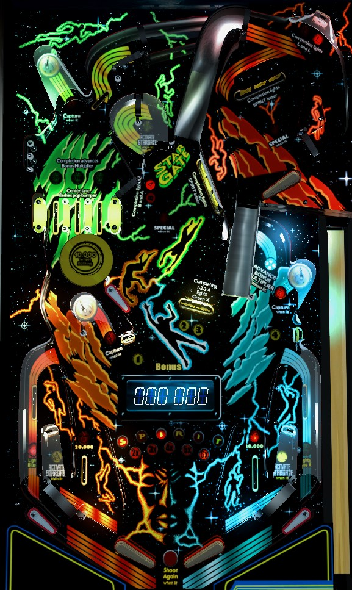

Not to be confused with Spirit of 76 (Gottlieb, 1975).
On any plunge, try to roll through the center top lane to light the pop bumper for 10,000 points for a few seconds. To play 3-ball multiball, lock a ball in all 3 of the game's saucers when lit. To play 2-ball multiball, lock a ball under the center Stargate ramp by either completing 1-2-3-4 in the lower part of the playfield then shooting the center mini-loop, or hitting the lit standup target behind an in lane from a shatz or an out lane save. Playfield scoring is 2x or 3x with 2 or 3 balls in play. Drop targets award Spirit letters; 7 total completions across either bank in a single ball awards special. Out lane flippers are controlled by the second flipper buttons on the side of the cabinet.
A plunge on Spirit goes up and along the back of the playfield before rolling down one of the three top lanes near the upper left. Roll through a lit lane to unlight it. Lit lanes score 5,000 points, and unlit lanes score 1,000. Unlighting all 3 lanes will relight them and advance the bonus multiplier towards its maximum of 6x. Lane change is available on the right flipper only, so you can rotate which of the three lanes are lit. It is always preferable to roll through the center lane, as this causes the pop bumper to flash until about 10 non-bumper switch hits have been scored; the flashing pop bumper scores 10,000 points per pop. The bumper scores 1,000 points when not flashing.
Spirit has two flavors of multiball: 2-ball and 3-ball, which are worked towards in very different ways.
To play 2-ball multiball, you must raise the center Stargate ramp, then lock a ball underneath it. When the ramp is raised, it will be automatically lowered after about 10 switch hits. There are 2 ways to raise the Stargate ramp:
To play 3-ball multiball, you must lock a ball at all 3 of the game's saucers within a single ball in play. A ball can only be locked at a saucer if the saucer is lit. Only one saucer is lit at a time, alternating based on slingshot hits. Unlit saucers score 5,000 points, and lit saucers score 10,000. Saucers are in the lower left, lower right, and far back left. If the main playfield ball drains, all flippers are disabled and locked balls are kicked out, meaning your progress is reset at the start of each ball. Locking 3 balls instantly starts 3-ball multiball.
During multiball, all scoring features are in play, with all scoring multiplied by 2 or 3 when there are 2 or 3 balls in play respectively. The only other multiball-specific scoring feature is the in lanes, which are lit alternately for 20,000 points based on slingshot hits only when there is more than one ball in play.
There are two 3-banks of drop targets: one on the middle-right of the main playfield, and one on the upper playfield. Main playfield drop targets score 2,000 points and a bonus advance. Upper playfield drop targets score 4,000 points and a bonus advance. Completing either bank awards a letter in Spirit. After Spirit is completely spelled, completing either bank again awards a Special. Spirit letters and lit Special are not carried over from ball to ball, so you need a total of 7 drop target bank completions on a single ball to earn the Special.
There are 2 solo standup targets: one in the back center near the mini-loop, and one in the very top right of the upper playfield. The first hit to either of these targets scores 1,000 points and causes the letters in front of that target to flash. The next to hits each score 5,000 points and solidly lights a letter. Lighting all 4 letters by hitting the two targets three times each awards an instant extra ball. There is only one extra ball allowed per ball in play, but if extra ball is set to score points instead, it can be earned multiple times in a single ball.
One of the two out lanes is lit for Lights Blue X, alternating with slingshot hits. Going down an out lane lit for Lights Blue X then saving the ball with the out lane flipper lights the right loop that curls under the right ramp for an instant bonus multiplier.
Out lanes score 1,000 points when lit, or 100 when not lit, and alternate being lit on slingshot hits. Lit out lanes light the right loop under the right ramp for a bonus multiplier. Each out lane has a mini-flipper, operated with the second flipper button on each side of the cabinet. This mini-flipper is always available and can whack a ball through a one-way gate and back into the in lane. This is one way to hit the Activate Stargate target that is "behind" the in lanes. The out lane flippers are strong enough that the ball sometimes comes back through the one-way gate before the gate can close, meaning it may take multiple attempts to save an out lane ball, but nevertheless, all out lane drains can and should be saved. In lanes score 1,000 points and are lit alternately for 20,000 points during multiball. There are 4 slingshots at the bottom of the table; two in the standard positions, and two more directly above the Activate Stargate targets that separate the in and out lanes. Slingshots score 10 points and alternate which in lanes, out lanes, lock saucers, and Activate Stargate targets are lit.
Base bonus is advanced by 1,000 points each time a 1-2-3-4 standup target or drop target is knocked down. Base bonus is indicated by the display in the playfield. If there is a maximum base bonus, it is at least 500,000 points, which is extremely unnecessary; most good balls won't have more than 50,000 points in base bonus. Bonus multiplier is increased one at a time with each completion of the top lanes or each shot through the lit right loop. Max bonus multiplier is 6x. There is no holdover for the bonus or bonus multiplier, and no mid-ball bonus collect.
In competition/novelty play, extra balls and specials score 100,000 points.